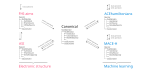

What the package does
Quoll loads, converts and writes operators expressed in an atomic-orbital basis. By operator we mean a matrix such as the Hamiltonian or overlap produced by an electronic-structure code — annotated with the metadata needed to interpret it (atoms, basis set, sparsity pattern, spherical-harmonics convention, and optionally spin or a k-point).
Supported formats
Quoll currently ships with three built-in formats:
| Source | Typical use | Sparsity |
|---|---|---|
| FHI-aims | Reference electronic-structure output | Compressed-sparse-column |
| DeepH | Machine-learning Hamiltonian format | Atom-pair block |
| Canonical | Quoll's internal pivot format | Atom-pair block or dense |
Every format is represented by its own metadata type (FHIaimsCSCRealMetadata, DeepHBlockRealMetadata, CanonicalBlockRealMetadata, …). All metadata types inherit from AbstractMetadata and share a common set of accessors (op_kind, op_basisset, op_sparsity, op_atoms, etc.), so the library code for e.g. basis-set manipulation or k-point construction is written once and works across formats.
The canonical pivot
Most conversions inside a Quoll pipeline go through the canonical format.

Going via the canonical format is not required, however. convert_operator dispatches on the pair (target metadata type, input operator), so any direct conversion — FHI-aims → DeepH, or any format to any other — can be added just by writing a dispatch method for that pair. The canonical format is the most convenient pivot because code shared across formats (projections, Fourier transforms, subblock work) is already written for it; but it is not a required stop.
Extending Quoll without forking it
Thanks to Julia's multiple dispatch, you do not need to edit Quoll.jl itself to add a new format, sparsity pattern, or operator flavour. All of the operator machinery — load_operator, build_operator, convert_operator, write_operators, perform_core_projection — dispatches on your types. As long as you define the methods they expect for your new metadata type, the rest of the pipeline works unchanged.
Which methods you actually need depends on what you want to do. Parsing methods are only required if you plan to use the app with a TOML input file; reading/writing methods are only required if you read or write that format from/to disk. A minimal extension might only implement convert_metadata and convert_data! if all you're doing is adding a new conversion path between two already-supported formats.
See Defining new methods for a more detailed overview, and Operator interface for the full list of methods that participate in the interface. If a conversion is likely to be useful to others, consider contributing it back to Quoll.jl — see the developer docs.
Pipeline architecture
When run as an app with mpiexec -n <np> quoll input_file.toml, Quoll executes roughly the following pipeline per input directory:
- Parse the TOML input into a
QuollParamsobject. - Find operator files on disk with
find_operatorkinds. - Load them into memory with
load_operators. - Convert to the canonical block-real format.
- If required, construct a k-point grid with
construct_kgridand project out core basis functions withperform_core_projection. - If an output format is requested, convert to it and
write_operatorsto disk.
Work is split across MPI ranks at two levels: input directories are partitioned across the global communicator, then k-points within each directory are partitioned across a per-directory sub-communicator.